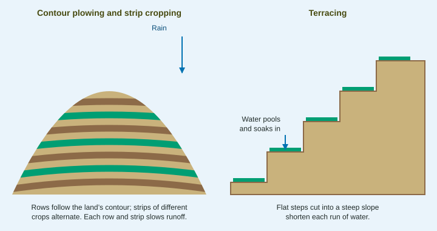

Sustainable Agriculture
Sustainable agriculture keeps farmland productive for the long run.
Part 1 · Hook
Why this matters
Part 2 · Before you start
What this builds on
Part 3 · Prerequisite check
Quick check before you start
1. Why does tilling increase erosion?
- It leaves soil bare and loose, so wind and water carry it away
- It packs the soil so tightly that roots cannot grow
- It adds clay to the topsoil, which washes away
- It removes the subsoil and leaves the topsoil
Show the answer
Bare, loose soil is easy for wind and rain to move.
- Correct: It leaves soil bare and loose, so wind and water carry it away:
- It packs the soil so tightly that roots cannot grow:
- It adds clay to the topsoil, which washes away:
- It removes the subsoil and leaves the topsoil:
2. How do legumes such as clover and soybeans add nitrogen to soil?
- Bacteria in their root nodules fix nitrogen from the air
- They absorb nitrate from rain and store it
- They release nitrogen gas into the soil
- They break down rock to free nitrogen
Show the answer
Nitrogen-fixing bacteria in legume roots turn nitrogen gas into ammonium.
- Correct: Bacteria in their root nodules fix nitrogen from the air:
- They absorb nitrate from rain and store it:
- They release nitrogen gas into the soil:
- They break down rock to free nitrogen:
3. What is integrated pest management?
- Combining monitoring and several controls to keep pests low with little pesticide
- Spraying the strongest pesticide on a fixed schedule
- Using only one crop variety everywhere
- Burning fields after each harvest
Show the answer
IPM monitors pests and uses targeted controls only when needed.
- Correct: Combining monitoring and several controls to keep pests low with little pesticide:
- Spraying the strongest pesticide on a fixed schedule:
- Using only one crop variety everywhere:
- Burning fields after each harvest:
Part 4 · See it
See it first

Part 5 · Step by step
How it works, step by step
- Rows follow the contour, dense strips alternate with row crops, or slopes are terracedwater running downhill is slowed at each row, strip or step
- Slower waterhas more time to soak in and less energy to carry soil
- Residue left on the surface (no-till) and windbreaksprotect the soil from rain splash and wind
- Less soil is lost and organic matter builds upthe soil holds more water and nutrients, and yields can be kept up for decades
Part 6 · Key ideas
Key ideas
- Erosion control on slopes: contour plowing (rows across the slope), strip cropping (alternating strips of row crops and dense crops) and terracing (flat steps).
- No-till farming plants into the last crop's residue without plowing, and windbreaks of trees slow the wind. Both protect the surface.
- Crop rotation breaks pest cycles, and rotating in legumes adds nitrogen. Perennial crops and cover crops keep roots in the soil all year.
- Soil fertility: organic fertilizer (manure, compost) adds nutrients slowly and builds organic matter; liming raises the pH of acid soil; rotational grazing protects pasture.
Part 7 · Misconception
A common mistake
The wrong idea: Contour plowing means plowing straight up and down a hill so water drains away fast.
What actually happens: Contour plowing runs rows across the slope, along lines of equal height. Each furrow holds back water, so it soaks in instead of rushing downhill and carrying soil with it.
Part 8 · Check yourself
Check yourself
Exam-style questions. Anything you miss goes into your review queue.
1. Which practice plants seeds into the leftover stalks of the last crop without plowing?
- No-till farming
- Contour plowing
- Terracing
- Strip cropping
Show the answer
No-till leaves the residue in place and plants through it.
- Correct: No-till farming: Right: no plowing, residue left on top.
- Contour plowing: Contour plowing still plows, but across the slope.
- Terracing: Terracing builds flat steps on slopes.
- Strip cropping: Strip cropping alternates strips of crops.
2. How does contour plowing reduce erosion?
- Rows across the slope hold water back, so less runs downhill
- Rows up the slope send water to the bottom of the field faster
- Plowing loosens the soil, so it absorbs most of the rain
- Contour rows block the wind from reaching the soil
Show the answer
Each furrow along a contour line acts as a small dam.
- Correct: Rows across the slope hold water back, so less runs downhill: Right: water is held at each row.
- Rows up the slope send water to the bottom of the field faster: Rows up and down the slope speed erosion; contour rows run across.
- Plowing loosens the soil, so it absorbs most of the rain: Plowing loosens soil but does not make it absorb all rain.
- Contour rows block the wind from reaching the soil: Contour plowing is aimed at water, not wind.
Model or diagram
Soil conservation on hillsides
3. In the left panel of the diagram, which way do the plowed rows run?
- Across the slope, along the contour
- Straight up and down the slope
- In circles around a central well
- On the flat ground at the bottom of the hill
Show the answer
The rows curve around the hill at even heights, following its contour.
- Correct: Across the slope, along the contour: Right: across the slope.
- Straight up and down the slope: Up and down is the opposite of contour plowing.
- In circles around a central well: Circles describe center-pivot irrigation.
- On the flat ground at the bottom of the hill: The rows cover the hillside.
4. According to the right panel, why does terracing reduce erosion?
- Water pools on each flat step and soaks in
- The steps are steeper than the original slope, so water drains faster
- The steps are built of rock, so they do not hold any soil
- The steps catch wind and keep it from reaching the crop
Show the answer
The label shows water pooling on a step and soaking in.
- Correct: Water pools on each flat step and soaks in: Right: flat steps hold water.
- The steps are steeper than the original slope, so water drains faster: Each step is flat, not steeper.
- The steps are built of rock, so they do not hold any soil: Terraces hold soil for crops.
- The steps catch wind and keep it from reaching the crop: The diagram shows water, not wind.
5. Which situation fits the left panel's practices better than the right panel's?
- A gently rolling field worked by machines
- A very steep mountainside with thin soil
- A flat desert field with strong winds
- A flooded rice paddy on a river delta
Show the answer
Contour rows and strips suit moderate slopes worked by machines; terraces suit steep slopes.
- Correct: A gently rolling field worked by machines: Right: gentle slopes suit contour rows and strips.
- A very steep mountainside with thin soil: Very steep slopes call for terraces.
- A flat desert field with strong winds: Flat, windy land calls for windbreaks.
- A flooded rice paddy on a river delta: Paddies are already flat and flooded.
Data
Soil loss under four practices
| Practice | Soil lost (metric tons per ha per year) | Corn yield (metric tons per ha) |
|---|---|---|
| Plowed up and down the slope | 20 | 9.6 |
| Contour plowing | 10 | 9.5 |
| Contour plowing with strip cropping | 5 | 9.2 |
| No-till with contour rows | 2 | 9.4 |
6. Write the setup for the percent change in soil lost from plowing up and down the slope to no-till with contour rows, then give the answer.
Type the setup as on the exam, with brackets and units, then the answer.
Show the answer
: no-till cut soil loss by 90%.
- Setup: ; answer -90 %
7. A 40-hectare field loses 18 metric tons of soil per hectare each year. After switching to no-till it loses 3 metric tons per hectare. How many metric tons of soil does the field save each year?
Type a number, then its unit (metric tons). Scale words (2.5 million) and powers of ten (2.5 × 10^6) are read.
Show the answer
- Answer: 600 metric tons
Part 9 · Summary
Summary
Part 10 · Up next
What comes next
Part 11 · Connections